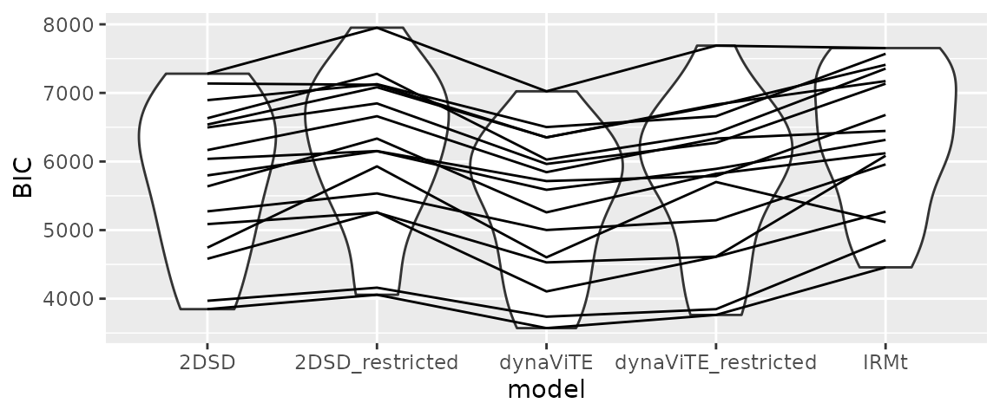
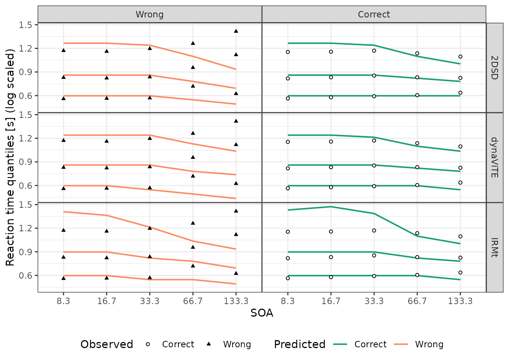

Illustration of the workflow for a modelling study using dynConfiR
Sebastian Hellmann
Source:vignettes/articles/ModellingWorkflow.Rmd
ModellingWorkflow.RmdFor dynConfiR version 1.0.0
This vignette illustrates the whole workflow for a modelling study
using the dynConfiR package. A detailed description of the
package and the implemented models can be found in Hellmann et
al. (preprint). The basic workflow of a modelling study is illustrated
together with the respective functions implemented in the package in the
following chart:
Workflow of modeling study using dynConfiR
library(dynConfiR)
library(ggplot2)
library(dplyr)
#>
#> Attaching package: 'dplyr'
#> The following objects are masked from 'package:stats':
#>
#> filter, lag
#> The following objects are masked from 'package:base':
#>
#> intersect, setdiff, setequal, union
library(magrittr)
library(tidyr)
#>
#> Attaching package: 'tidyr'
#> The following object is masked from 'package:magrittr':
#>
#> extractStep 0: Data preparation
For this illustration, we load the ConfidenceOrientation
dataset, which is contained in the dynConfiR package. The
dataset contains results from an orientation discrimination experiment
with simultaneous confidence judgments. The data set includes results
from 16 participants and 3 sessions each. The task was to identify the
orientation (horizontal (“waagrecht”) or vertical (“senkrecht”)) of a
grid that was briefly visible and then covered by a mask in form of a
checkerboard pattern. The stimulus-onset-asynchrony (SOA) was
manipulated in 5 steps. Confidence was reported using a joystick on a
continuous visual analogue scale with values between -1 and 1.
data("ConfidenceOrientation")
data <- ConfidenceOrientation %>%
select(participant, SOA, stimulus, response, correct, rt, cont_rating)
head(ConfidenceOrientation)
#> # A tibble: 6 × 12
#> participant session gender age SOA orientation stimulus response correct
#> <dbl> <dbl> <chr> <dbl> <dbl> <dbl> <chr> <chr> <dbl>
#> 1 1 1 w 23 8.3 0 senkrecht senkrecht 1
#> 2 1 1 w 23 133. 90 waagrecht senkrecht 0
#> 3 1 1 w 23 33.3 0 senkrecht senkrecht 1
#> 4 1 1 w 23 16.7 90 waagrecht senkrecht 0
#> 5 1 1 w 23 133. 0 senkrecht senkrecht 1
#> 6 1 1 w 23 16.7 0 senkrecht senkrecht 1
#> # ℹ 3 more variables: rt <dbl>, cont_rating <dbl>, disc_rating <dbl>
head(data)
#> # A tibble: 6 × 7
#> participant SOA stimulus response correct rt cont_rating
#> <dbl> <dbl> <chr> <chr> <dbl> <dbl> <dbl>
#> 1 1 8.3 senkrecht senkrecht 1 2.89 -0.969
#> 2 1 133. waagrecht senkrecht 0 3.06 0.817
#> 3 1 33.3 senkrecht senkrecht 1 2.83 -1
#> 4 1 16.7 waagrecht senkrecht 0 2.65 -1
#> 5 1 133. senkrecht senkrecht 1 2.92 0.270
#> 6 1 16.7 senkrecht senkrecht 1 3.17 -0.992There are several steps of data preparation, which are either
necessary or recommended. First, the models implemented in
dynConfiR all require confidence to be measured on a
discrete scale, so we discretize the contionuous confidence rating. We
do this using equidistant breaks. The functions would be fine with any
integer or factor column, so we simply use the cut function.
data <- data %>%
mutate(confidence = cut(cont_rating, breaks = seq(-1, 1, length.out=6), include.lowest = TRUE,
labels=1:5))
head(data)
#> # A tibble: 6 × 8
#> participant SOA stimulus response correct rt cont_rating confidence
#> <dbl> <dbl> <chr> <chr> <dbl> <dbl> <dbl> <fct>
#> 1 1 8.3 senkrecht senkrecht 1 2.89 -0.969 1
#> 2 1 133. waagrecht senkrecht 0 3.06 0.817 5
#> 3 1 33.3 senkrecht senkrecht 1 2.83 -1 1
#> 4 1 16.7 waagrecht senkrecht 0 2.65 -1 1
#> 5 1 133. senkrecht senkrecht 1 2.92 0.270 4
#> 6 1 16.7 senkrecht senkrecht 1 3.17 -0.992 1Second, it is recommended to exclude trials with very fast and slow response times. We do this using a sharp threshold of 300ms for fast response times and an individual upper threshold for each participant equal to the mean plus three times standard deviation. In addition, we exclude participants that showed guessing-level performance in the identification judgment, defined by the critical threshold of a binomial test. Finally, we exclude participants, which showed no variation in their confidence judgments, defined by reporting the same discrete confidence in at least 90% of the trials.
### Exclusion of participants
exclusion_crit <- data %>% group_by(participant) %>%
reframe(bad_performance = binom.test(sum(correct), n(), p=0.5, alternative="greater")$p.value,
prob_mode_conf = max(table(confidence))/n()) %>%
mutate(bad_performance = bad_performance > 0.05,
no_conf_variation = prob_mode_conf>.90)
print(t(exclusion_crit))
#> [,1] [,2] [,3] [,4] [,5] [,6]
#> participant 1.0000000 2.0000000 3.0000000 4.0000000 5.0000000 6.0000000
#> bad_performance 0.0000000 0.0000000 0.0000000 0.0000000 0.0000000 0.0000000
#> prob_mode_conf 0.4092593 0.4277778 0.5709877 0.5425926 0.5290123 0.3641975
#> no_conf_variation 0.0000000 0.0000000 0.0000000 0.0000000 0.0000000 0.0000000
#> [,7] [,8] [,9] [,10] [,11] [,12]
#> participant 7.0000000 8.0000000 9.0000000 10.000000 11.0000000 12.0000000
#> bad_performance 0.0000000 0.0000000 0.0000000 0.000000 0.0000000 0.0000000
#> prob_mode_conf 0.5246914 0.4981481 0.3641975 0.795679 0.6259259 0.4759259
#> no_conf_variation 0.0000000 0.0000000 0.0000000 0.000000 0.0000000 0.0000000
#> [,13] [,14] [,15] [,16]
#> participant 13.0000000 14.0000000 15.0000000 16.0000000
#> bad_performance 0.0000000 0.0000000 0.0000000 0.0000000
#> prob_mode_conf 0.6006173 0.4037037 0.4432099 0.5401235
#> no_conf_variation 0.0000000 0.0000000 0.0000000 0.0000000
excluded_parts <- exclusion_crit %>% filter(bad_performance | no_conf_variation) %>%
pull(participant)
data <- data %>% filter(!participant %in% excluded_parts)
### Result: No participant was excluded
### Exclusion of trials:
nrow_tot <- nrow(data)
data <- data %>% group_by(participant) %>%
filter((rt > 0.3) & (rt <mean(rt)+3*sd(rt)))
cat("We excluded ", 1- nrow(data)/nrow_tot, " of all trials because of RT's.\n")
#> We excluded 0.01296296 of all trials because of RT's.Step 1: Parameter fitting
The fitting function expects the data to come in a tidy data frame,
with each row representing one trial. The data frame should include the
following columns (expected column names in parentheses): true stimulus
identity (stimulus), binary decision response
(response), categorical confidence judgment
(rating), and response time (rt). As an
alternative to the stimulus or response column, a column for accuracy
(correct) may be provided. In addition, a column for the
experimental manipulation of discriminability of the stimulus
(condition) may be included, which is the SOA in our
example. The columns stimulus and response
should have the same possible values (“senkrecht” and “waagrecht” in our
case). Instead of renaming columns in the data frame, alternative column
names may be added as arguments of the form
rating = "confidence", to tell the function that the
confidence rating is contained in the column confidence.
Similarly, we add the argument condition="SOA" to identify
the column that represents our experimental manipulation. Any column
named sbj, subject, or
participant will be used to fit the models independently to
individual subjects.
Provided the data is prepared in such a format the desired models may
be fitted to the data with one simple function call to
fitRTConfModels. There are some possible specifications in
the fitting procedure, like using only the single best parameter set
(identified by a grid_search) using nAttempts=1 and only
one optimization call (nRestarts=1) to speed up the model
fitting. For diffusion-based models, the argument
restr_tau="simult_conf" tells the function that the amount
of post-decisional evidence accumulation should be naturally bound by
the empirical response time, since confidence was reported
simultaneously with the identification judgment.
In the following code, we comment the actual fitting call and load pre-fitted parameters, because the fitting would take some time (about 1.5 hours on a 2.4GHz processor, given there are 20 cores available).
# parfits <- fitRTConfModels(data, models=c("2DSD", "IRMt"),
# restr_tau = "simult_conf",
# opts = list(nAttempts=1, nRestarts=1),
# logging = FALSE,
# parallel="models", n.cores = 20,
# condition="SOA", rating="confidence")
# save(parfits, file="saved_parfits.RData")
load("ressources/saved_parfits.RData")
head(parfits)
#> model negLogLik N k BIC AICc AIC
#> 1 dynaViTE 3423.288 1587 24 7023.447 6895.283 6894.576
#> 2 2DSD 3566.387 1587 20 7280.166 7173.259 7172.774
#> 3 IRMt 3756.845 1587 19 7653.712 7552.126 7551.690
#> 4 dynaViTE 2833.633 1601 24 5844.348 5715.967 5715.266
#> 5 2DSD 3005.796 1601 21 6166.537 6054.123 6053.591
#> 6 IRMt 3152.874 1601 19 6445.937 6344.180 6343.748
#> fixed t0 st0 v1 v2
#> 1 sym_thetas=FALSE 1.3424692 0.9359015 0.18269770 0.39655533
#> 2 sym_thetas=FALSE, lambda=0 0.0000000 0.9424488 0.01871128 0.21913645
#> 3 sym_thetas=FALSE 1.4305597 1.0771606 0.01381402 0.25913446
#> 4 sym_thetas=FALSE 0.0000000 1.2528076 0.06839356 0.29952115
#> 5 sym_thetas=FALSE, lambda=0 0.8677412 1.0621247 0.17089625 0.06500952
#> 6 sym_thetas=FALSE 1.4080804 1.5808275 0.03986083 0.21061357
#> v3 v4 v5 thetaLower1 thetaLower2 thetaLower3 thetaLower4
#> 1 0.6972138 2.0676742 2.367748 0.5319406 0.7244282 1.052593 1.356565e+00
#> 2 0.5285474 1.7837465 2.285297 0.2457220 0.8414821 1.804069 2.640370e+00
#> 3 0.5684356 1.9681446 2.285918 0.8107486 1.0434087 1.467859 1.875711e+00
#> 4 0.5049240 1.1211837 1.427827 1.5183670 1.7745036 2.010324 1.000000e+24
#> 5 0.3130298 0.9364188 1.809277 2.1704956 2.6941202 3.114510 1.000000e+24
#> 6 0.4045930 1.1478456 2.459388 2.5641551 3.1989347 3.899690 1.000000e+24
#> thetaUpper1 thetaUpper2 thetaUpper3 thetaUpper4 wrt wint
#> 1 0.2439791 0.5182875 0.992385 1.316834e+00 NA NA
#> 2 -0.5129848 0.3566307 1.756024 2.661897e+00 NA NA
#> 3 0.8384092 1.2394523 2.026483 2.568221e+00 0.06619651 0.9338035
#> 4 1.4258496 1.6555371 1.901753 1.000000e+24 NA NA
#> 5 2.0613721 2.5446263 2.887283 1.000000e+24 NA NA
#> 6 2.4926748 2.9529658 3.601922 1.000000e+24 0.00000000 0.8425240
#> wx b a z sz sv tau
#> 1 NA NA 1.7443862 0.5932128 3.956088e-01 0.84324524 0.1123153
#> 2 NA NA 1.6865064 0.5916077 1.481742e-06 0.66848076 1.4331155
#> 3 0.000000 0.5886599 0.7630233 NA NA NA NA
#> 4 NA NA 1.7026228 0.5128777 7.930835e-01 0.00149642 1.4352690
#> 5 NA NA 1.9316822 0.5116397 9.349912e-01 0.24087906 0.6161631
#> 6 0.157476 0.5331864 0.5520089 NA NA NA NA
#> w svis sigvis lambda participant
#> 1 0.4829751 1.154609e-06 0.7349314 0.6103222 1
#> 2 NA NA NA 0.0000000 1
#> 3 NA NA NA NA 1
#> 4 0.2182938 1.732596e-02 0.2311835 0.7750507 10
#> 5 NA NA NA 0.0000000 10
#> 6 NA NA NA NA 10We can also include parameter restrictions into our models using the
fixed argument. For example, the starting point can be
fixed to 0.5 to implement the assumption of unbiased observers. For race
models (IRMt and PCRMt), this would be included by specifying that the
response thresholds for both accumulators should be equal
(a="b"). For unbiased observers, it may be reasonable to
assume that the confidence thresholds for both responses coincide
(sym_thetas=TRUE). Also, the between-trial variabilities of
non-decision time and starting point may be set to 0 (which leads to
much faster fitting).
# parfits_restricted <- fitRTConfModels(data, models=c("dynaViTE", "2DSD"),
# restr_tau = "simult_conf",
# fixed = list(sym_thetas=TRUE, z=0.5, sz=0, st0=0),
# opts = list(nAttempts=1, nRestarts=1),
# logging = FALSE,
# parallel="models", n.cores = 20,
# condition="SOA", rating="confidence")
# save(parfits_restricted, file="saved_parfits_restricted.RData")
load("ressources/saved_parfits_restricted.RData")
parfits_restricted$model <- paste0(parfits_restricted$model, "_restricted")
head(parfits_restricted)
#> model negLogLik N k BIC AICc AIC
#> 1 dynaViTE_restricted 3782.012 1587 17 7689.308 7598.371 7598.024
#> 2 2DSD_restricted 3927.596 1587 13 7950.998 7881.391 7881.193
#> 3 dynaViTE_restricted 3104.807 1601 17 6335.046 6243.957 6243.613
#> 4 2DSD_restricted 3282.036 1601 13 6659.991 6590.269 6590.072
#> 5 dynaViTE_restricted 3145.554 1602 17 6416.552 6325.452 6325.109
#> 6 2DSD_restricted 3591.284 1602 13 7278.495 7208.765 7208.568
#> fixed t0 st0 v1
#> 1 sym_thetas=TRUE, z=0.5, sz=0, st0=0 0.9769269 0 0.104220678
#> 2 sym_thetas=TRUE, z=0.5, sz=0, st0=0, lambda=0 0.0000000 0 0.004605967
#> 3 sym_thetas=TRUE, z=0.5, sz=0, st0=0 0.0000000 0 0.051849765
#> 4 sym_thetas=TRUE, z=0.5, sz=0, st0=0, lambda=0 0.0000000 0 0.032984315
#> 5 sym_thetas=TRUE, z=0.5, sz=0, st0=0 0.0000000 0 0.000000000
#> 6 sym_thetas=TRUE, z=0.5, sz=0, st0=0, lambda=0 0.0000000 0 0.025194867
#> v2 v3 v4 v5 theta1 theta2 theta3
#> 1 0.2274269 0.3946561 1.0985194 1.2429055 0.203665481 0.4060153 0.7559468
#> 2 0.1472463 0.3580550 1.1412923 1.3908756 -0.004910317 0.5852685 1.5533554
#> 3 0.1693557 0.3216821 0.6569603 0.8039947 0.957901992 1.0780363 1.1971126
#> 4 0.1069910 0.2163189 0.6577729 1.2179978 2.882317755 3.6263226 4.4925305
#> 5 0.0000000 0.1097628 0.4804683 0.8395739 0.321829888 0.4251862 0.5035269
#> 6 0.0000000 0.0000000 0.5820335 1.3844089 1.890613073 2.2985357 2.6199404
#> theta4 a z sz sv tau w svis
#> 1 1.014019e+00 2.308885 0.5 0 1.593695e-06 0.4740562 0.41781718 1.000000e-06
#> 2 2.233444e+00 2.321753 0.5 0 4.945559e-06 1.4519430 NA NA
#> 3 1.000000e+24 2.346478 0.5 0 1.230765e-06 1.4024472 0.19285450 1.000000e-06
#> 4 1.000000e+24 2.377583 0.5 0 0.000000e+00 1.4057496 NA NA
#> 5 6.588504e-01 2.046277 0.5 0 9.477280e-07 1.3960523 0.08876062 5.945011e-06
#> 6 3.351139e+00 2.082824 0.5 0 0.000000e+00 1.3993972 NA NA
#> sigvis lambda participant
#> 1 0.43166559 0.5964927 1
#> 2 NA 0.0000000 1
#> 3 0.07597196 0.7374815 10
#> 4 NA 0.0000000 10
#> 5 0.17308645 1.1844435 11
#> 6 NA 0.0000000 11Step 2: Quantitative model comparison
Quantitative model comparison are often based on difference in
information criteria, like BIC and AIC. The package includes two
important functions to compare the model fits quantitatively. First, on
an individual level, one may compute model weights based on information
criteria, using the function subject_modelweights. This
allows to investigate individual variability in group comparisons or
studies about individual differences. It would also be possible to
calculate individual Bayes Factors, which is sometimes easier to
interpret.
Second, to calculate group averages, the function
group_BMS_fits performs a Bayesian model selection based on
a random effects model on model weights (see Dauzineau et al., 2014, for
more detail). The function also provides the output of a fixed effects
model, which is equivalent to adding up individual BIC differences (or
multiplying individual Bayes Factors), however, we recommend the random
effects model weight. It is also possible to calculate Bayes Factors for
a binary comparison using the output but as a comparison between two
models, only, is rather seldom, the output is formatted for multiple
models.
In our example, we first visualize the BIC values across different
models (with lines for each participant). We already see that the
dynaViTE model has the lowest BIC for all participants and the IRMt
performs worse. Then, we apply subject_modelweights
function and visualize the individual model weights. This plot again
shows that for each individual subject, the dynaViTE performs clearly
better. Accordingly, the protected exceedence probability (PEP) clearly
favours the dynaViTE model in the group-level comparison.
all_parfits <- bind_rows(parfits, parfits_restricted)
ggplot(all_parfits, aes(x=model, y=BIC))+
geom_violin()+geom_line(aes(group=participant))
individual_weights <- subject_modelweights(all_parfits)
print(head(individual_weights))
#> 2DSD 2DSD_restricted dynaViTE dynaViTE_restricted IRMt
#> 1 1.795365e-56 3.844859e-202 1 2.571276e-145 1.379280e-137
#> 2 6.185979e-71 8.501866e-96 1 1.345557e-16 4.959842e-210
#> 3 2.151030e-31 1.053002e-288 1 2.962021e-239 3.244526e-112
#> 4 9.873734e-60 1.296667e-116 1 1.372067e-31 1.612462e-208
#> 5 4.312211e-51 1.316465e-92 1 1.669803e-24 2.841928e-243
#> 6 3.239234e-46 5.120792e-123 1 6.288945e-67 1.385392e-158
#> participant
#> 1 1
#> 2 10
#> 3 11
#> 4 12
#> 5 13
#> 6 14
individual_weights %>% pivot_longer(cols=1:5, names_to="Model", values_to="Model weight") %>%
ggplot(aes(x=as.factor(participant), y=`Model weight`, fill=Model))+
geom_bar(stat="identity")
group_weights <- group_BMS_fits(all_parfits)
print(head(group_weights$model_weights))
#> alpha r ep pep fx_prob
#> 2DSD 2 0.09523810 0.0003 0.0003 0
#> 2DSD_restricted 1 0.04761905 0.0000 0.0000 0
#> dynaViTE 16 0.76190476 0.9997 0.9997 1
#> dynaViTE_restricted 1 0.04761905 0.0000 0.0000 0
#> IRMt 1 0.04761905 0.0000 0.0000 0Step 3: Model Checks: Predictions and visual comparison
Checking whether the best-fitting model (or any other model) can actually account for the observed data is an important step in every modelling study. Sometimes, there is a particular data pattern that is at the core of the study, but even if not, we should always check, whether the model can sufficiently account for the key data patterns, e.g. the relationship between discriminability and confidence.
Predictions on a group-level can be computed in two different ways. First, it is possible to aggregate the fitted parameters (using the mean oder median) first and then only compute predictions for these group-level parameters. However, we recommend the second way: Computing the predicted distributions for each individual with the respective parameters and then aggregate the predictions in the same way as the empirical data. We think that this will in general give more robust results, because computing the mean of parameters independently ignores possible interactions that these parameters could have on the outcomes.
We can directly use the output of the fitting function to compute
predictions for our fitted parameters for each individual using the
function predictConfModels (for the discrete response
distributions) and predictRTModels (for the response time
density).
# predictedResponses <-
# predictConfModels(parfits, simult_conf = TRUE)
# predictedRTdist <-
# predictRTModels(parfits, maxrt=9, simult_conf=TRUE)
# save(predictedResponses, predictedRTdist, file="predictions.RData")
load("ressources/predictions.RData")
print(head(predictedResponses))
#> condition stimulus response correct rating p info err
#> 1 1 1 1 1 1 0.1257439758 OK 1.319106e-05
#> 2 2 1 1 1 1 0.0950783463 OK 1.204739e-05
#> 3 3 1 1 1 1 0.0571920690 OK 1.048219e-05
#> 4 4 1 1 1 1 0.0016623426 OK 4.351961e-06
#> 5 5 1 1 1 1 0.0007121333 OK 3.246739e-06
#> 6 1 -1 1 0 1 0.1151017976 OK 1.362677e-05
#> model participant
#> 1 dynaViTE 1
#> 2 dynaViTE 1
#> 3 dynaViTE 1
#> 4 dynaViTE 1
#> 5 dynaViTE 1
#> 6 dynaViTE 1
print(head(predictedRTdist))
#> condition stimulus response correct rating rt dens model
#> 1 1 1 1 1 1 0.00000000 0 dynaViTE
#> 2 1 1 1 1 1 0.09090909 0 dynaViTE
#> 3 1 1 1 1 1 0.18181818 0 dynaViTE
#> 4 1 1 1 1 1 0.27272727 0 dynaViTE
#> 5 1 1 1 1 1 0.36363636 0 dynaViTE
#> 6 1 1 1 1 1 0.45454545 0 dynaViTE
#> participant
#> 1 1
#> 2 1
#> 3 1
#> 4 1
#> 5 1
#> 6 1The predicted distributions may be visually compared to the empirical distributions to check how accurately the model fits the data. Therefore, we transform the condition column in the prediction data sets to fit the one in the empirical data.
predictedResponses <- mutate(predictedResponses, SOA = factor(condition, labels=sort(unique(data$SOA))))
predictedRTdist <- mutate(predictedRTdist, SOA = factor(condition, labels=sort(unique(data$SOA))))
data <- mutate(data, SOA= factor(SOA, levels=sort(unique(SOA))))Afterward, we use different aggregations to visualize different aspects of the data. First the increase in response accuracy with increasing SOA:
########### Plot accuracies #######
Data_Acc <- data %>% group_by(participant, SOA) %>%
summarise(Acc = mean(correct), .groups="drop") %>%
summarise(Acc = mean(Acc), .by = SOA) %>% mutate(SOA=as.factor(SOA))
Preds_Acc <- predictedResponses %>%
group_by(participant, model, SOA) %>%
reframe(Acc = sum(p*correct)/(2))%>%
group_by(model, SOA) %>%
reframe(Acc = mean(Acc))
## Figure: Plot of Fitted Accuracy ----
p_Acc <- ggplot(Data_Acc, aes(x=SOA, y=Acc)) +
geom_line(data=Preds_Acc, aes(linetype="Predicted", group=model), linewidth=1)+
geom_point(aes(shape="Observed"), fill="white")+
facet_wrap(.~model, nrow=1)+ ylab("Mean Accuracy")+
scale_linetype_manual(name="", values=1) +
scale_shape_manual(values=c(21),name = "") +
guides(shape=guide_legend(order=3), color=guide_legend(order=3))+
theme_bw() +
theme(legend.position = "right", panel.spacing=unit(0, "lines"))
p_AccNext, we inspect the relationship between task difficulty and confidence and its modulation by accuracy. We see that the data shows an increase in confidence with longer SOA’s for both correct and incorrect decisions. The dynaViTE model is the only model that produces this behavior in the model fits.
two_colors_correct <- c("#1b9e77", "#fc8d62")
###### Plot mean confidence ratings across conditions and accuracy #####
Data_MRating_corr_cond_part <- data %>%
group_by(participant, SOA, correct) %>%
reframe(meanRating = mean(as.numeric(confidence)))
Data_MRating_corr_cond <- Data_MRating_corr_cond_part %>%
reframe(meanRating=mean(meanRating),.by=c(SOA, correct)) %>%
mutate(SOA=as.factor(SOA), correct=as.factor(correct))
Preds_MRating_corr_cond <- predictedResponses %>%
group_by(model, participant, SOA, correct) %>%
reframe(meanRating = sum(p*rating)/(sum(p))) %>%
reframe(meanRating = mean(meanRating), .by = c(model, SOA, correct)) %>%
mutate(correct=as.factor(correct))
ggplot(Data_MRating_corr_cond,
aes(x=SOA, y=meanRating, group = correct, shape=correct)) +
geom_line(data=Preds_MRating_corr_cond, aes(color=correct), linewidth=0.8)+
geom_point(fill="white", size=1.8)+ ylab("Mean Confidence")+
facet_wrap(.~model, nrow=1)+ #, dir="v"
scale_color_manual(values= two_colors_correct, breaks=c(1,0),
name = "Predicted", labels=c("Correct", "Wrong")) +
scale_fill_manual(values= two_colors_correct, breaks=c(1,0),
name = "Predicted", labels=c("Correct", "Wrong")) +
scale_shape_manual(values=c(21,17),breaks=c(1,0),
name = "Observed", labels=c("Correct", "Wrong")) +
theme_bw() +
theme(legend.position = "right", panel.spacing=unit(0, "lines"),
axis.text.x = element_text(angle=30))When it comes to response times it is important to use the same way of aggregation for the empirical data and the predictions. We want to compute the response time quantiles for all trials put into one set, depending on the accuracy and the confidence rating or the accuracy and SOA, respectively. To get equivalent quantiles for the prediction, for which we only have the densities for different values of the response times, we have to compute a weighted average of these densities with weights equal to the relative proportion in the data for the respective participant.
Ns_part <- data %>%
group_by(participant) %>%
reframe(N=n(), MinRT = min(rt)) %>%
select(participant, N)
Preds_RTdens_corr_cond_rating <- predictedRTdist %>%
left_join(Ns_part, by="participant") %>%
group_by(rating, SOA, model, correct, rt) %>%
reframe(dens = sum(dens*N)/nrow(data))For computing the quantiles given the densities (probability density
function; pdf), the dynConfiR package offers the
PDFtoQuantiles function, which computes the quantiles for
the column rt determined by the column dens
for each subgroup of the data determined by all other columns present.
In the following situation, we get the quantiles for each model,
accuracy, and confidence rating independently:
# Reaction Time Quantiles of the Data grouped by rating and accuracy
Data_RTQuants_corr_rating <- data %>%
mutate(rating=confidence) %>%
group_by(rating, correct) %>%
reframe(p=c(.1,.5,.9), q = quantile(rt, probs = c(.1,.5,.9)))
### g) Prediction response time quantiles ----
Preds_RTQuants_corr_rating <- Preds_RTdens_corr_cond_rating %>%
group_by(model, rt, correct, rating) %>%
reframe(dens = mean(dens)) %>%
PDFtoQuantiles(p=c(.1,.5,.9))
## Figure 7: RTQuantiles accross correct X rating ----
ggplot()+
geom_line(data=mutate(Preds_RTQuants_corr_rating,
correct=factor(correct, labels=c("Wrong", "Correct")),
rating = as.factor(rating)),
aes(x=rating, y=log(q), group=as.factor(p),color=correct), linewidth=0.7)+
geom_point(data=mutate(Data_RTQuants_corr_rating,
correct=factor(correct, labels=c("Wrong", "Correct")),
rating = as.factor(rating)),
aes(x=rating, y=log(q), shape=correct),
size=1.2, fill="white")+
scale_color_manual(values= two_colors_correct, breaks=c("Correct", "Wrong"),
name = "Predicted", labels=c("Correct", "Wrong")) +
scale_shape_manual(values=c(21,17),breaks=c("Correct", "Wrong"),
name = "Observed", labels=c("Correct", "Wrong")) +
scale_x_discrete(name="Confidence rating", breaks=1:5)+
scale_y_continuous(name="Reaction time quantiles [s] (log scaled)")+
facet_grid(model ~correct)+ #correct~model
theme_bw() +
theme(legend.box = "horizontal", legend.position = "bottom",
legend.direction = "horizontal",
panel.spacing=unit(0, "lines"))Similarly, we can visualize the response time distribution for the different levels of the SOA manipulation.
# Reaction Time Quantiles of the Data grouped by SOA and accuracy
Data_RTQuants_corr_cond <- data %>%
group_by(SOA, correct) %>%
reframe(p=c(.1,.5,.9), q = quantile(rt, probs = c(.1,.5,.9)))
### Prediction response time quantiles
Preds_RTQuants_corr_cond <- Preds_RTdens_corr_cond_rating %>%
group_by(model, rt, correct, SOA) %>%
reframe(dens = sum(dens)) %>%
PDFtoQuantiles(p=c(.1,.5,.9))
## Figure 7: RTQuantiles accross correct X SOA ----
ggplot()+
geom_line(data=mutate(Preds_RTQuants_corr_cond, correct=factor(correct, labels=c("Wrong", "Correct")),
SOA = as.factor(SOA)),
aes(x=SOA, y=log(q), group=as.factor(p),color=correct), linewidth=0.7)+
geom_point(data=mutate(Data_RTQuants_corr_cond, correct=factor(correct, labels=c("Wrong", "Correct")),
SOA = as.factor(SOA)),
aes(x=SOA, y=log(q), shape=correct),
size=1.2, fill="white")+
scale_color_manual(values= two_colors_correct, breaks=c("Correct", "Wrong"),
name = "Predicted",
labels=c("Correct", "Wrong")) +
scale_shape_manual(values=c(21,17),breaks=c("Correct", "Wrong"),
name = "Observed",
labels=c("Correct", "Wrong")) +
scale_y_continuous(name="Reaction time quantiles [s] (log scaled)")+
facet_grid(model ~correct)+ #correct~model
theme_bw() +
theme(legend.box = "horizontal", legend.position = "bottom",
legend.direction = "horizontal", panel.spacing=unit(0, "lines"))